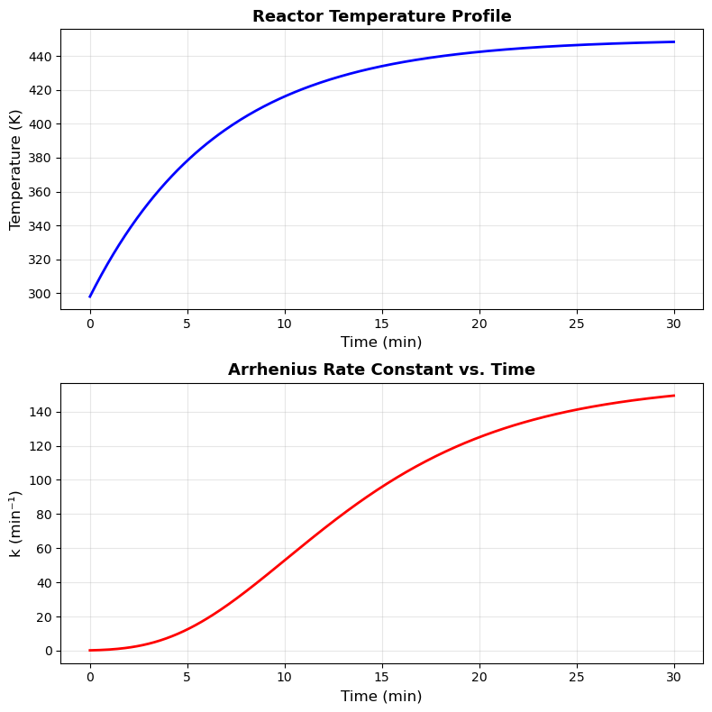
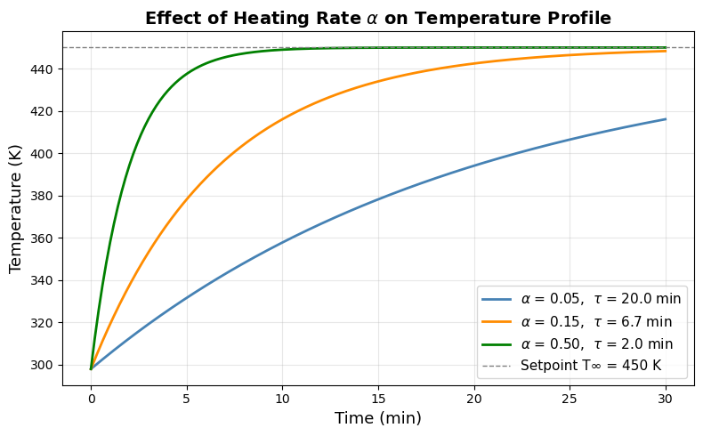

Homework 04: Matplotlib & NumPy#
Release Date: Feb 27
Due Date: Mar 13 11:59 PM
Total Points: 60 pts
Instructions:
Complete all problems in this notebook
Show all your work with clear comments
Use appropriate variable names
Format all outputs professionally with units
Test your code to ensure it runs without errors
Submission:
Submit this completed Jupyter notebook to Gradescope
Make sure all cells have been executed and outputs are visible
Problem 1 (20 points): Python List vs NumPy — Speed and Convenience#
NumPy’s vectorized operations run far faster than Python for loops because they execute compiled C code on contiguous memory blocks, bypassing Python’s per-element overhead.
You have \(N = 1{,}000{,}000\) pressure measurements (in Pa) from a reactor. Using the same data as both a NumPy array and a Python list:
List implementation — use a
forloop to convert Pa → atm (÷ 101325), compute the mean, and count readings above 3.0 atm. Time the calculation withtime.time().NumPy implementation — repeat using vectorized operations (no loops). Time it the same way.
Timing pattern:
import time
start = time.time()
# ... your code ...
elapsed = time.time() - start
**Creating random 1,000,000 points
import numpy as np
P_array = np.random.uniform(start, end, number of points)
import numpy as np
import time
np.random.seed(42)
P_array = np.random.uniform(100000, 600000, 1_000_000) # Pa
P_list = list(P_array)
# --- Task 1: List implementation ---
start = time.time()
P_atm_list = [p / 101325 for p in P_list]
mean_list = sum(P_atm_list) / len(P_atm_list)
count_list = sum(1 for p in P_atm_list if p > 3.0)
t_list = time.time() - start
# --- Task 2: NumPy implementation ---
start = time.time()
P_atm_np = P_array / 101325
mean_np = np.mean(P_atm_np)
count_np = np.sum(P_atm_np > 3.0)
t_numpy = time.time() - start
# --- Task 3: Results, verification, speedup ---
print(f"Mean (list): {mean_list:.4f} atm Mean (NumPy): {mean_np:.4f} atm")
print(f"Count > 3 atm (list): {count_list} (NumPy): {int(count_np)}")
print(f"Results match: mean {abs(mean_list - mean_np) < 1e-4}, count {count_list == int(count_np)}")
print(f"\nList time: {t_list:.4f} s")
print(f"NumPy time: {t_numpy:.6f} s")
print(f"Speedup: {t_list / t_numpy:.1f}x")
Mean (list): 3.4559 atm Mean (NumPy): 3.4559 atm
Count > 3 atm (list): 592476 (NumPy): 592476
Results match: mean True, count True
List time: 0.0834 s
NumPy time: 0.001972 s
Speedup: 42.3x
Batch Reactor Schematic#
The diagram below shows a jacketed batch reactor. The heating fluid circulates through the jacket, transferring heat through the reactor wall to raise the contents from \(T_0\) to the setpoint \(T_\infty\).
JACKETED BATCH REACTOR
═══════════════════════
┌─────────────────────────┐
│ Condenser / │
│ Reflux line │
└───────────┬─────────────┘
│
╔════════════════════┪════════════════════╗
║ │ ║
║ ╔═══════╩═══════╗ ║
║ ║ ║ ║
Jacket ═════╣░░░░░░░░░░░░║ Reactor ║░░░░░░░░░░░░╠════ Jacket
inlet ║░░░░░░░░░░░░║ contents ║░░░░░░░░░░░░║ outlet
T_jacket ║░░░░░░░░░░░░║ (well-mixed) ║░░░░░░░░░░░░║
(heating ║░░░░░░░░░░░░║ T(t): ║░░░░░░░░░░░░║
fluid) ║░░░░░░░░░░░░║ 298 → 450 K ║░░░░░░░░░░░░║
║░░░░░░░░░░░░║ A → B ║░░░░░░░░░░░░║
║ ║ ╬ ║ ║
║ ║ Impeller ║ ║
║ ╚═══════════════╝ ║
╚═════════════════════════════════════════╝
Heat transfer: Q = U · A_wall · (T_jacket − T)
Temperature: T(t) = T∞ − (T∞ − T₀) · exp(−αt), α = U·A_wall/(ρ·V·cₚ)
Rate constant: k(T) = A · exp(−Eₐ/RT)
k(298 K) ≈ 0.17 min⁻¹ → k(450 K) ≈ 157 min⁻¹ (~913× increase)
Problem 2 (40 points): Combined NumPy + Matplotlib — Reactor Temperature Profile#
A batch reactor heats from ambient temperature (298 K) to a setpoint of 450 K following:
with \(T_0 = 298\) K, \(T_\infty = 450\) K, \(\alpha = 0.15\) min⁻¹, over \(t = 0\) to \(30\) min.
The reaction rate constant follows the Arrhenius equation:
with \(A = 1.0 \times 10^8\) min⁻¹, \(E_a = 50{,}000\) J/mol, \(R = 8.314\) J/(mol·K).
Tasks:
Create a 2×1 subplot figure (figsize=(8, 8)) at \alpha = 0.15 ,\text{min}^{-1} using NumPy (no loops). Also print the maximum rate constant and the time at which it occurs:
Top: Temperature (K) vs. Time (min)
Bottom: k (min⁻¹) vs. Time (min)
Print the maximum k and the time at which it occurs.
Plot T(t) for \(\alpha = 0.05,\ 0.15,\ 0.50\) min⁻¹ on the same figure. Label each curve with its \(\alpha\) and \(\tau = 1/\alpha\). Add a horizontal dashed line at \(T_\infty\), title, legend.
From your Task 3 plot, what does \(\tau = 1/\alpha\) physically represent? How does smaller \(\alpha\) affect the reaction?
import numpy as np
import matplotlib.pyplot as plt
T0 = 298.0; T_inf = 450.0; alpha = 0.15
A = 1.0e8; Ea = 50000.0; R = 8.314
t = np.linspace(0, 30, 300)
# Tasks 1 & 2
T = T_inf - (T_inf - T0) * np.exp(-alpha * t)
k = A * np.exp(-Ea / (R * T))
fig, axes = plt.subplots(2, 1, figsize=(8, 8))
axes[0].plot(t, T, 'b-', linewidth=2)
axes[0].set_xlabel('Time (min)', fontsize=12); axes[0].set_ylabel('Temperature (K)', fontsize=12)
axes[0].set_title('Reactor Temperature Profile', fontsize=13, fontweight='bold')
axes[0].grid(True, alpha=0.3)
axes[1].plot(t, k, 'r-', linewidth=2)
axes[1].set_xlabel('Time (min)', fontsize=12); axes[1].set_ylabel('k (min⁻¹)', fontsize=12)
axes[1].set_title('Arrhenius Rate Constant vs. Time', fontsize=13, fontweight='bold')
axes[1].grid(True, alpha=0.3)
plt.tight_layout(); plt.show()
print(f"Max k = {np.max(k):.4e} min⁻¹ at t = {t[np.argmax(k)]:.2f} min")
# Task 3: Effect of alpha
alphas = [0.05, 0.15, 0.50]
colors = ['steelblue', 'darkorange', 'green']
plt.figure(figsize=(8, 5))
for a, c in zip(alphas, colors):
T_a = T_inf - (T_inf - T0) * np.exp(-a * t)
plt.plot(t, T_a, color=c, linewidth=2,
label=f'$\\alpha$ = {a:.2f}, $\\tau$ = {1/a:.1f} min')
plt.axhline(T_inf, color='gray', linestyle='--', linewidth=1,
label=f'Setpoint T∞ = {T_inf:.0f} K')
plt.xlabel('Time (min)', fontsize=13); plt.ylabel('Temperature (K)', fontsize=13)
plt.title('Effect of Heating Rate $\\alpha$ on Temperature Profile', fontsize=14, fontweight='bold')
plt.legend(fontsize=11); plt.grid(True, alpha=0.3); plt.tight_layout(); plt.show()

Max k = 1.4931e+02 min⁻¹ at t = 30.00 min

Discussion (Task 4):
\(\tau = 1/\alpha\) is the time to close 63% of the gap between current temperature and setpoint \(T_\infty\). From the Task 3 plot, a slow heater (\(\alpha = 0.05\), \(\tau = 20\) min) barely reaches setpoint within 30 min — the reactor lingers at low temperatures where \(k\) is negligible, wasting batch time. A fast heater (\(\alpha = 0.50\), \(\tau = 2\) min) reaches \(T_\infty\) almost immediately, maximizing time at high \(k\).